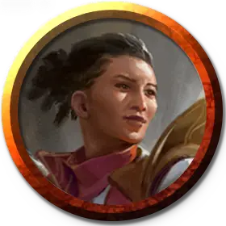

Профессор порядка Лорхолда
Lorehold Professor of Order
Маленький или Средний Гуманоид (Волшебник), любое мировоззрение

Класс Доспеха 12 (15 с доспехом мага)
Хиты 104 (16к8 + 32)
Скорость 30 футов
| мод | спас | ||
|---|---|---|---|
| СИЛ | 11 | +0 | +0 |
| ЛОВ | 14 | +2 | +2 |
| ТЕЛ | 14 | +2 | +5 |
| мод | спас | ||
|---|---|---|---|
| ИНТ | 19 | +4 | +7 |
| МДР | 15 | +2 | +5 |
| ХАР | 13 | +1 | +4 |
Навыки Восприятие +7, История +7, Магия +7
Чувства пассивное Восприятие 15
Языки Общий
Опасность 7 (2900 опыта)
Бонус мастерства +3
Особенности
Языки. Знает Общий и ещё четыре языка.
Голос из прошлого (1/день). Профессор может наложить заклинание связь с иным миром [contact other plane], чтобы связаться с давно умершим духом, используя Интеллект в качестве базовой характеристики.
Действия
Мультиатака. Профессор совершает две атаки Отталкивающим взрывом. Он также может использовать Силовой барьер, если он доступен.
Отталкивающий взрыв. Рукопашная атака заклинанием: +7 к попаданию, досягаемость 30 футов, одна цель. Попадание: 13 (2к8 + 4) урона силовым полем. Если целью является существо Большого размера или меньше, оно должно преуспеть в спасброске Силы Сл 15, иначе будет отброшено на расстояние до 10 футов от профессора и опутано до начала следующего хода профессора.
Силовой барьер (Перезарядка 5-6). . Профессор волшебным образом создает стену из полупрозрачного золотистого силового поля в пределах 90 футов. Стена существует 1 минуту или до тех пор, пока профессор снова не использует это действие. Барьер может представлять собой вертикальную или горизонтальную плоскость длиной до 30 футов со сторонами или полусферический купол радиусом 10 футов с полом. Стена обеспечивает полное укрытие. Она имеет КД 17, 30 хитов и иммунитет урону ядом и психической энергией.
Использование заклинаний. Профессор накладывает одно из следующих заклинаний, используя Интеллект в качестве базовой характеристики (Сл спасброска от заклинаний 15):
• Неограниченно: понимание языков [comprehend languages], указание [guidance], свет [light];
• 2/день каждое: переносящая дверь [dimension door], поиск предмета [locate object], доспехи мага [mage armor], изменение формы камня [stone shape].
Реакции
Покой магии (2/день). Когда существо, которое профессор видит в пределах 60 футов, накладывает заклинание, профессор может волшебным образом развеять заклинание за мгновение до завершения. Заклинатель должен преуспеть в спасброске Сл 15, используя свою базовую характеристику, иначе заклинание не срабатывает и ячейка расходуется впустую.
Описание
Профессора порядка Лорхолда ищут свидетельства закономерностей и предсказуемых результатов в истории. Они исследуют поток событий, изучая, какие события предвещают конкретные результаты, и они прослеживают свою магию по этим путям причинно-следственной связи. Исследуя руины, профессора порядка укрепляют опасные сооружения и находят самые безопасные пути во время поисков. Столкнувшись лицом к лицу, они сбивают с толку своих врагов, направляя покой совершенного порядка, создавая устойчивые силовые барьеры и подавляя враждебную магию.
Учёные лорхолда
Археоманты факультета Лорхолд черпают свои магические силы в потоке времени и судьбы, а также в том, как эти силы формируют ход истории. Учёные занимающиеся этим обширным мистическим исследованием, разделяются на тех, кто рассматривает историю как непредсказуемую мешанину случайностей, и тех, кто верит, что события образуют идеальную и предсказуемую закономерность.